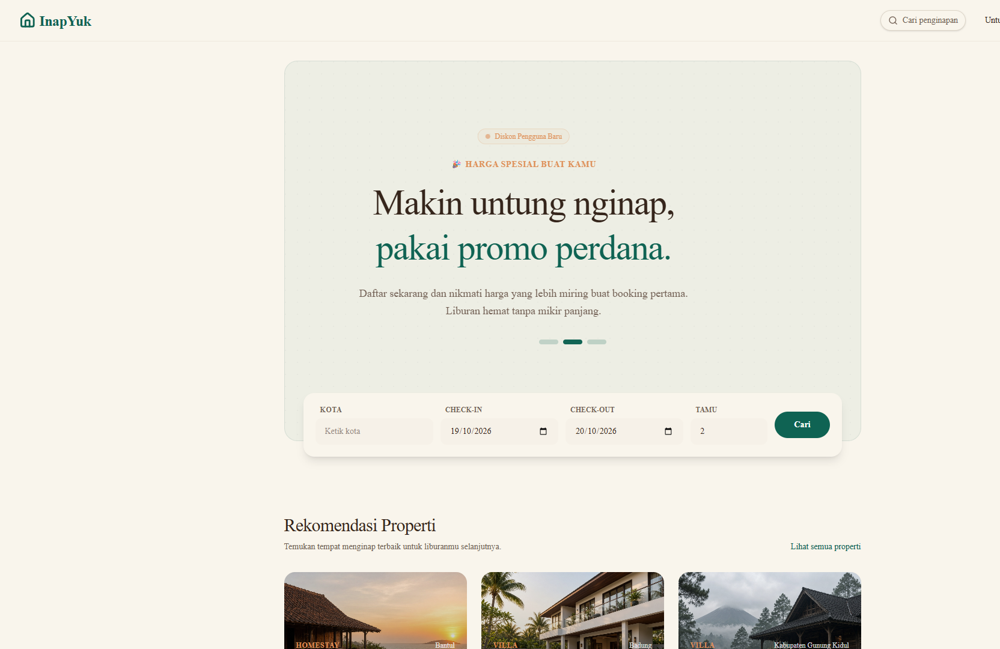
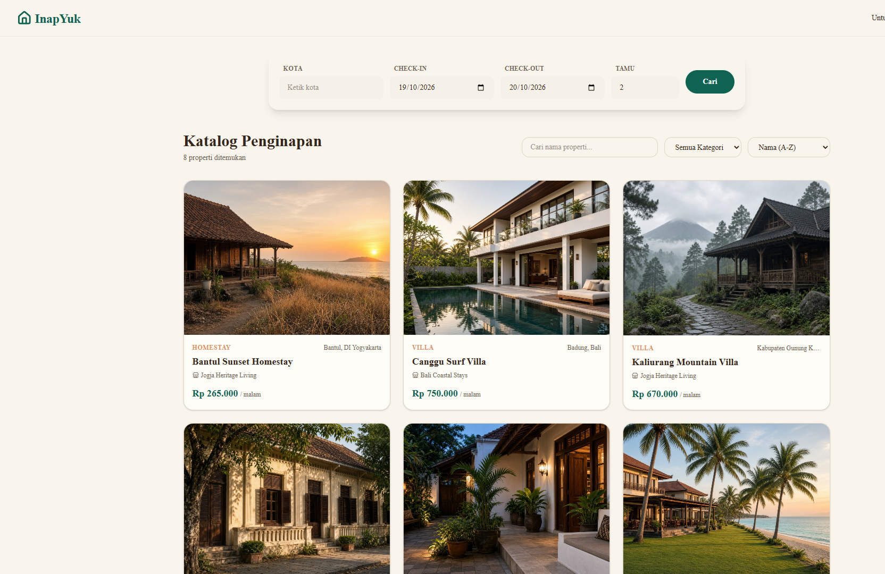
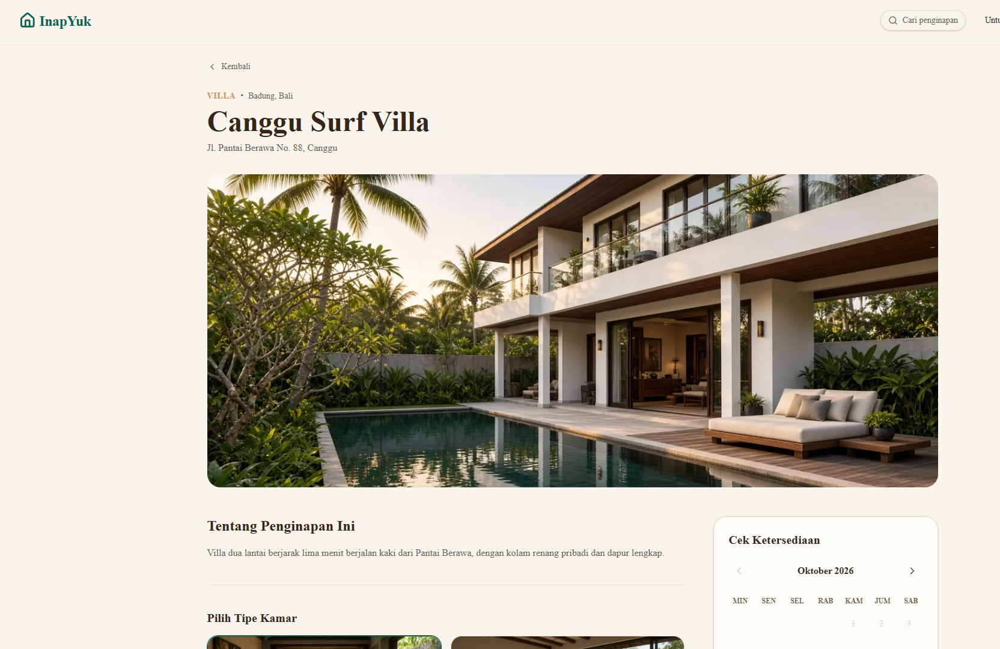
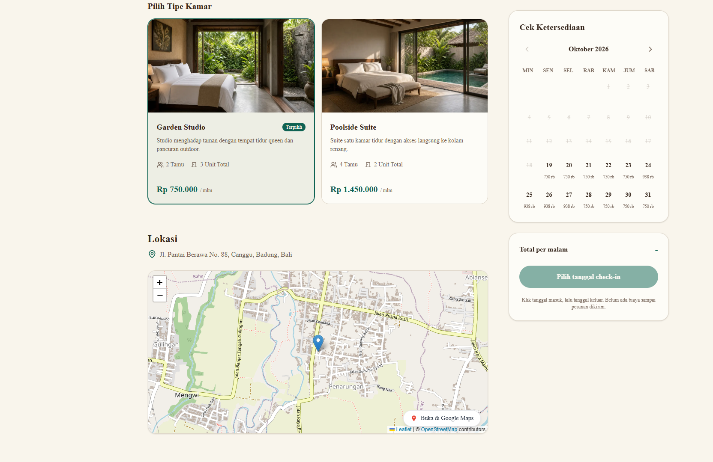

Guest
Search by city and date, compare the nightly price, book, pay, and review the stay.
Purwadhika final project
A property rental website. Guests book a stay. Owners manage the place.
Hendrik and Awan
The brief
Search by city and date, compare the nightly price, book, pay, and review the stay.
List properties and rooms, set prices, confirm payment, and read the reports.
In the app, the owner account is called a tenant.
How we divided it
Homepage, search, login, profiles, and the screens an owner uses to list a property.
Booking, payment proof, notifications, reviews, and the sales and occupancy reports.
We share one database and one visual style. Awan presents first. Hendrik continues from the booking calendar.
What it runs on
Awan presents Feature 1
This part is how a guest finds a place, and how an owner puts that place online.
Homepage
City, check-in, check-out, and number of guests.
Below that, a few recommended stays with a starting price.

Catalog
The demo data has eight stays in Bali and Yogyakarta. Each one has its own photo.
Search by name, filter by type, and sort by name or price. Paging is on the server.

Catalog, in code
apps/api/src/utils/pagination.ts
export function toPrismaPageArgs(input: PaginationInput): PrismaPageArgs {
const page = Math.max(DEFAULT_PAGE, Math.trunc(input.page ?? DEFAULT_PAGE));
const requested = Math.trunc(input.limit ?? DEFAULT_LIMIT);
const limit = Math.min(MAX_LIMIT, Math.max(1, requested));
return { skip: (page - 1) * limit, take: limit, page, limit };
}Default page size is 10, and the cap is 100. Page 2 skips the first 10 rows. The browser never loads the whole table.
Property page
The pin comes from the address the owner saved. If the street cannot be found, it falls back to the city.

Rooms and calendar
Garden Studio is Rp 750,000 a night. Poolside Suite is Rp 1,450,000.
Hendrik continues from this calendar.

Accounts
Verification email
apps/api/src/modules/auth/auth.service.ts
const { rawToken, tokenHash, expiresAt } = createTokenData();
const { user } = await prisma.$transaction((tx) =>
createUserAndToken(tx, newUserData(input, 'USER'), { tokenHash, expiresAt }),
);
await sendVerificationEmail(user, rawToken, 'Verifikasi Akun InapYuk');On a hosted server the process can stop as soon as the response is sent. Waiting here means the verification mail is not dropped.
What the owner sets up
Peak-season price
apps/api/src/services/pricing.service.ts
export function applyAdjustment(basePrice: number, type: PriceAdjustmentType, value: number) {
const adjusted = type === 'PERCENTAGE'
? basePrice * (1 + value / 100)
: basePrice + value;
return Math.max(0, Math.round(adjusted));
}Awan's owner screen writes this rule. Hendrik's booking reads the result for each night.
Hendrik presents Feature 2
Feature 1 already stores the nightly price. This part books the room, checks the payment, and reports the result.
Booking
The guest picks check-in and check-out. Nothing is charged until the booking is sent.
We store that night's price on the booking. A later change to the peak price does not rewrite an old booking.
Booking, in code
apps/api/src/modules/bookings/bookings.create.ts
function toNightCreate(night: NightlyRate) {
return {
date: night.date,
basePrice: night.basePrice,
finalPrice: night.finalPrice,
peakSeasonRateName: night.peakSeasonRateName,
};
}The order keeps its own copy. Editing the room price later does not change nights that were already booked.
Order status
Status rules
apps/api/src/modules/bookings/status-machine.ts
const TRANSITIONS = {
WAITING_PAYMENT: ['WAITING_CONFIRMATION', 'CANCELLED'],
WAITING_CONFIRMATION: ['PROCESSED', 'WAITING_PAYMENT'],
PROCESSED: ['COMPLETED'],
CANCELLED: [],
COMPLETED: [],
};Any other jump is rejected. A finished stay cannot go back to waiting for payment.
Payment proof
File check
apps/api/src/middlewares/upload.middleware.ts
export const MAX_FILE_SIZE_BYTES = 1024 * 1024;
export const PAYMENT_PROOF_EXTENSIONS = ['.jpg', '.jpeg', '.png'];
export const uploadPaymentProof = buildUploader(PAYMENT_PROOF_EXTENSIONS);1 MB is 1024 times 1024 bytes. Profile photos use the same size. Property photos allow 5 MB.
After the stay
Reviews
apps/api/src/modules/reviews/reviews.create.ts
if (booking.review) throw conflict('Pesanan ini sudah pernah diulas');
if (booking.status !== 'COMPLETED') {
throw conflict('Ulasan hanya untuk menginap yang sudah selesai');
}The messages say the stay was already reviewed, or it is not finished yet. The same check also refuses a review before the checkout date.
Checks we kept
Who can call the route
apps/api/src/middlewares/auth.middleware.ts
export function requireRole(...roles: UserRole[]): RequestHandler {
return (req, _res, next) => {
if (!req.user) throw unauthorized();
if (!roles.includes(req.user.role)) {
throw forbidden('Akses ditolak');
}
next();
};
}Booking routes ask for role USER. The owner's transaction routes ask for role TENANT. "Akses ditolak" means access denied.
Demo
Thank you